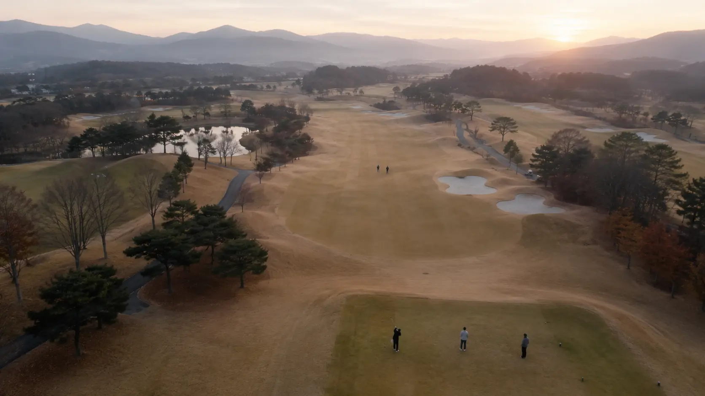

한국골프장경영협회(회장 최동호)가 2026년 3월 18일 발표한 자료에 따르면, 2025년 한 해 동안 전국 골프장을 찾은 총 내장객은 4,641만 4,912명으로 집계됐습니다. 2024년 4,741만여 명 대비 약 100만 명(2.1%) 줄어든 수치로, 2년 연속 감소세입니다.

핵심 데이터 한눈에
회원제 vs 비회원제, 격차가 벌어진다
이번 발표에서 가장 주목할 지점은 비회원제(대중제 포함) 골프장의 약진입니다. 골프장 유형별로 보면 회원제 152개소가 1,457만여 명을 받은 반면, 비회원제 372개소는 3,184만여 명을 받았습니다. 단순한 개소 수 차이를 넘어, 운영 효율성에서도 비회원제가 앞섰습니다.
152개소
372개소
18홀로 환산한 1개소당 평균 이용객은 비회원제 81,792명으로 회원제 75,582명을 약 6,200명 상회했습니다. 같은 규모의 골프장이라도 비회원제가 더 많은 라운드를 운영한다는 뜻입니다.
이 데이터가 시장에 던지는 시그널
코로나19 팬데믹 기간 폭발적으로 늘었던 골프 인구는 2024년부터 조정 국면에 들어섰고, 2025년에는 그 흐름이 더 분명해졌습니다. 협회 관계자도 "2025년 들어 이용객 증가세가 소폭 꺾인 양상"이라고 밝혔지만, "여전히 4,600만 명 이상의 높은 수준을 유지하고 있다"고 덧붙였습니다.
그러나 시장 내부의 구조 변화는 단순한 수요 위축으로 설명되지 않습니다. 회원제 골프장의 이용 밀도가 비회원제보다 낮다는 사실은 회원권 시장에도 직접적인 영향을 미칩니다.
- 회원제의 압력: 회원이 있는데도 이용 밀도가 낮다는 것은 회원 활성도 저하 또는 회원 모집 어려움을 시사합니다. 그린피 인하 경쟁 속에서 비회원제의 가격 매력은 더 부각됩니다.
- 비회원제의 자신감: 더 많은 라운드를 받고 있고, 운영 측면에서도 효율적입니다. 결과적으로 신규 골프장 개발이 체육시설법 개정 흐름과 맞물려 비회원제로 쏠릴 가능성이 큽니다.
- 회원권 가치의 분화: 입지·운영이 강한 상위 회원제는 오히려 희소성이 부각될 수 있지만, 평범한 회원제는 비회원제와의 경쟁에서 가격 압력을 받게 됩니다.
2026년 1월, 신규 골프장 19개소가 대기 중
2026년 1월 1일 기준 전국 골프장은 총 546개소입니다. 운영 중인 곳이 527개소이며, 나머지 19개소는 건설 중이거나 미착공 상태입니다.
회원제 152 + 비회원제 375
특히 운영 중 골프장의 비회원제 비중이 회원제 대비 약 2.5배(375 vs 152)에 달합니다. 새로 들어오는 19개소가 어떤 유형으로 설계되느냐가 다음 사이클의 시장 균형을 결정합니다. 만약 19개소 대부분이 비회원제로 시장에 진입한다면, 회원제 골프장의 자리는 더 좁아집니다.
회원권 시장에 주는 의미
이번 데이터는 회원권 분양·운영을 검토하는 시행사에게 두 가지 메시지를 던집니다.
첫째, "회원제 = 자동 매력"의 시대는 끝났습니다. 단지 "회원제"라는 이유만으로 회원이 모이지 않습니다. 입지·코스·콘셉트·운영 신뢰성이 비회원제 대비 분명한 우위를 제공해야 분양이 작동합니다.
둘째, 회원제 신규 진입자에게는 오히려 기회입니다. 시장 평균이 둔화될수록 차별화된 회원제는 더 도드라집니다. 비회원제 372개소와 다른 경험을 설계할 수 있다면, 4,200만 명에 가까운 비회원제 시장의 일부를 흡수할 여지가 있습니다.
지금의 시장은 "회원제냐 비회원제냐"의 문제가 아니라, "어떤 회원제냐"의 문제로 옮겨가고 있습니다.
회원권 분양·운영 전략 검토 중이시라면 (주)씨유레저로 문의 가능합니다.